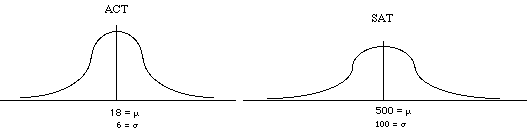

Week 2 lecture notes - PSYC 3330
Our goal for this week is to describe distributions. Last week, we talked about shape (symmetric, skewed, etc.). This week, we'll talk about center and variability
Center
There are three common measures of center:
- mean
- median
- mode
Mean
The mean is the most common measure of center. It is also known as the average
Formula: \(M = \frac{\sum X}{N}\)
- add up all the measurements, then divide by the total number of measurements
Example: Find the mean of the following data set: 5, 7, 5, 5, 5
- \(M=\frac{\sum X}{N} = \frac{5+7+5+5+5}{5} = \frac{27}{5} = 5.4\)
Median
The median is the score that divides a dataset exactly in half. That is, 50% of the measurements are above the median, and 50% of the measurements are below the median
Two cases:
Case 1: odd number of scores
- Step 1: put the scores in order
- Step 2: find the middle score (there is only one!)
Example: find the median of the following dataset: 32, 28, 24, 28, 31, 35, 28, 26
- put in order, then count down from ends until you reach the single middle score
- 24 26 28 28 28 29 31 32 35
Case 2: even number of scores
- Step 1: put the scores in order
- Step 2: find the two middle scores
- Step 3: find the average of the two middle scores
Example: find the median – 6, 1, 4, 2, 3, 4, 6, 6
- put in order, then count down from ends until you reach the two iddle scores:
- 1 2 3 4 4 6 6 6
- the average of 4 and 4 is 4, so median=4
Mode
The mode is the score (or category, in the case of nominal measurements) that occurs with greatest frequency.
- note: there can be multiple modes
Which center when?
- usually use the mean
- use the median if:
- distribution is skewed
- distribution is "open ended" (e.g., top answer on questionnaire is '5 or more')
- data are on ordinal scale
- use the mode if:
- data are on nominal scale
Variability
Variability provides a quantitative measure of the degree to which the scores in a distribution are spread out or clustered together
- in other words, variability = how much "differentness"
The most common measure of variability is standard deviation (SD), which measures how far, on average, the scores differ from the mean.
- essentially, standard deviation = "average deviation"
Computing SD
- compute deviation scores: subtract mean from every score in data set
- get rid of negative signs by squaring each deviation
- compute the average of these squared deviations (this is called the variance)
- take the square root of the variance
Example 1: \(X = 2, 4, 6, 8\). First, note that \(M=5\)
| X | X-M | (X-M)2 |
|---|---|---|
| 2 | -3 | 9 |
| 4 | -1 | 1 |
| 6 | 1 | 1 |
| 8 | 3 | 9 |
| SS=20 |
So variance = average of squared deviations = \(\frac{SS}{N} = \frac{20}{4}=5\).
Hence, standard deviation = \(\sqrt{5}=2.24\).
Example 2: \(X=6,1,4,2,3,4,6,6\). First, compute \(M=4\).
| X | X-M | (X-M)2 |
|---|---|---|
| 6 | 2 | 4 |
| 1 | -3 | 9 |
| 4 | 0 | 0 |
| 2 | -2 | 4 |
| 3 | -1 | 1 |
| 4 | 0 | 0 |
| 6 | 2 | 4 |
| 6 | 2 | 4 |
| SS=26 |
So variance = \(\frac{SS}{N} = \frac{26}{8} = 3.25\). Thus, standard deviation = \(\sqrt{3.25}=1.80\).
Measures of location: \(z\)-scores
Consider the following situation. You take the ACT and the SAT. You get a 26 on the ACT and a 620 on the SAT. The college that you apply to only needs one score. Which do you send them? In other words, which is better: the 26, or the 620?
Suppose the distributions of ACT and SAT scores are as depicted below:

Where would each score land in its respective distribution?
- ACT: mean=18, sd=6. A raw score of 26 is 8 points larger than the mean, which is 8/6=1.33 "standard deviations" above the mean
- SAT: mean=500, sd=100. A raw score of 620 is 120 points larger than the mean, which is 120/100=1.2 standard deviations above the mean.
- hence, ACT score is better (relatively speaking).
What we just did is computed \(z\)-scores for each raw score.
Definition: a \(z\)-score specifies the precise location of a raw score \(x\) within a distribution.
- the sign of the z-score (+ or -) signifies whether the score is above or below the mean, respectively
- the numerical value of the z-score specifies the distance from the mean by using standard deviation as the measurement unit (i.e., "how many standard deviations away from the mean?")
From raw score to \(z\)-score
\[ z=\frac{x-M}{SD} \]
Example: on a measure of concern for the environment, the mean is 79 and the standard deviation is 12. What are the z-scores for each of the following raw scores?
- 91:
\[ z=\frac{x-M}{SD}=\frac{91-79}{12} = \frac{12}{12}=1 \]
- 68:
\[ z=\frac{x-M}{SD}=\frac{68-79}{12}=\frac{-11}{12}=-0.92 \]
- 103:
\[ z=\frac{x-M}{SD}=\frac{103-79}{12}=\frac{24}{12}=2 \]
From \(z\)-score to raw score
Using algebra, we can go the other way. Solving the \(z\)-score equation above for \(X\), we get:
\[ x=M+z\cdot SD \]
Example: on a measure of peer influence among adolescents, the mean is 300 and the standard deviation is 20. Give the raw scores for adolescents whose scores on this measure are:
- 2.4
\[ x=M+z\cdot SD = 300+2.4(20)=348 \]
- 1.5
\[ x=M+z\cdot SD = 300+1.5(20)=330 \]
- 0
\[ x=M+z\cdot SD = 300+0(20)=300 \]
- -4.5
\[ x=M+z\cdot SD = 300-4.5(20)=210 \]